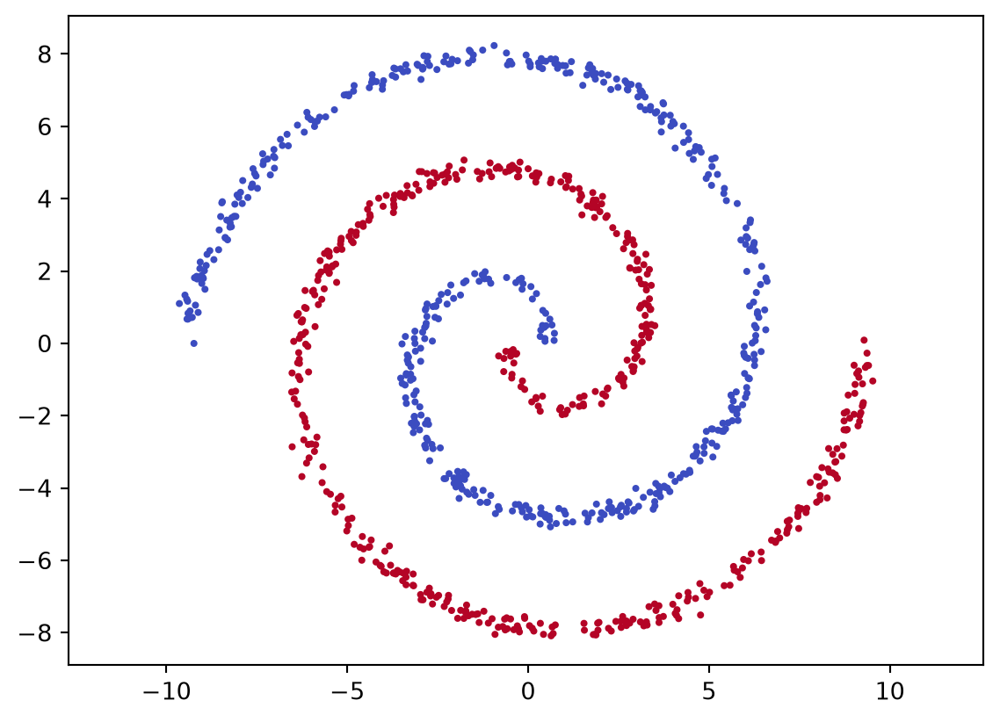
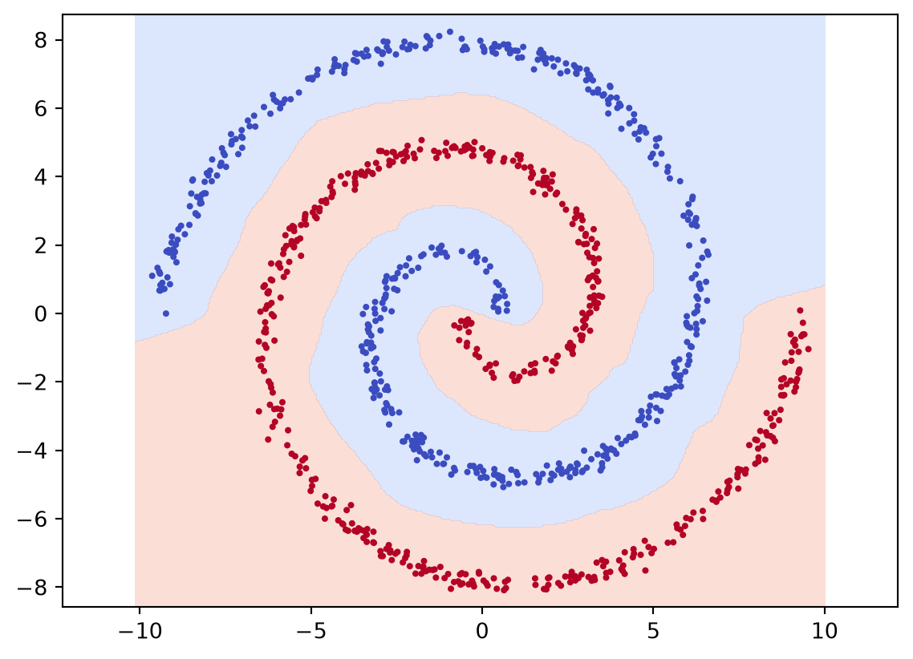

import torch
from matplotlib import pyplot as plt
from torch import nnA toy example
Let’s start by examining how PyTorch works: we build a small neural network, train it on a toy dataset, and dissect every step of the process.
If you have never used PyTorch, our introductory course covers the same ground at a gentler pace.
Setup
torch is the core library and torch.nn (imported as nn by convention) provides the neural network building blocks. We use matplotlib to visualize the data and the model predictions.
First, we pick the accelerator (e.g. GPU) if there is one and fall back to the CPU otherwise. Everything on this page runs in seconds either way:
device = (
torch.accelerator.current_accelerator()
if torch.accelerator.is_available()
else torch.device("cpu")
)
print(f"torch version: {torch.__version__}\ndevice: {device}")torch version: 2.13.0+cu130
device: cudaThen, we set a seed: our toy dataset and the network initialization both rely on random numbers, and a seed makes them identical from run to run:
torch.manual_seed(42)<torch._C.Generator at 0x7fd6187c5330>Tensors
The fundamental object in PyTorch is the tensor: an n-dimensional array with a shape, a data type, and a device. Although there are differences, if you know NumPy, this will look familiar.
Tensors can be created from Python data or by initializer functions, and any tensor can be created directly on the accelerator or copied there with .to(device):
a = torch.tensor([[1.0, 2.0], [3.0, 4.0]]) # create from Python data on the CPU
print(a)tensor([[1., 2.],
[3., 4.]])a.shapetorch.Size([2, 2])Unlike in NumPy, the default data type in PyTorch is 32-bit single-precision floating point:
a.dtypetorch.float32b = a.to(device) # copy to the accelerator
print(b)tensor([[1., 2.],
[3., 4.]], device='cuda:0')w = torch.randn(2, 5, device=device) # create directly on the accelerator
print(w)tensor([[ 0.1940, 2.1614, -0.1721, 0.8491, -1.9244],
[ 0.6530, -0.6494, -0.8175, 0.5280, -1.2753]], device='cuda:0')NumPy-style array operations are supported:
print(b @ w)tensor([[ 1.5000, 0.8625, -1.8071, 1.9050, -4.4751],
[ 3.1940, 3.8864, -3.7862, 4.6590, -10.8746]], device='cuda:0')For a deeper dive (broadcasting, views, memory on accelerators), see the tensor section in our intro course and our webinar Everything you wanted to know (and more!) about PyTorch tensors.
Our toy dataset
Let’s synthesize a small two-spirals dataset (two interleaved spirals of points) and try to classify the points. This is a classic machine learning benchmark for binary classification because it cannot be solved by a linear model, but a neural network can solve it in seconds.
def two_spirals(n_per_class=500, noise=0.15): # noise adds jitter
"""Two interleaved spirals of 2D points, one per class."""
# torch.rand(n_per_class, 1) ➔ uniform random numbers between 0 & 1
# use sqrt to distribute the points evenly along the spirals
# * (3 * torch.pi) scales the values from 0 to 3π
# ➔ creates 1.5 rotations (one rotation = 2π)
t = torch.rand(n_per_class, 1).sqrt() * (3 * torch.pi)
# parametric equations of an Archimedean spiral give the base spiral
# torch.hstack combines the coordinates into a tensor of shape (n_per_class, 2)
arm = torch.hstack([t * torch.cos(t), t * torch.sin(t)])
# class 1: add Gaussian noise to base spiral
arm1 = arm + torch.randn(n_per_class, 2) * noise
# class 2: rotate base spiral by 180° (* -1) and add Gaussian noise
arm2 = -arm + torch.randn(n_per_class, 2) * noise
# stack classes in x and move to accelerator
x = torch.vstack([arm1, arm2]).to(device)
# create labels (class 1 ➔ 0, class 2 ➔ 1) and send to accelerator
y = torch.cat(
[
torch.zeros(n_per_class, dtype=torch.long),
torch.ones(n_per_class, dtype=torch.long),
]
).to(device)
return x, y
x, y = two_spirals()
print(x.shape, y.shape)torch.Size([1000, 2]) torch.Size([1000])The data consists of two tensors on the accelerator:
xholds the 2 coordinates of 1,000 points (500 per class) as a float32 tensor. Those are the inputs.yholds the labels of the points (0or1) as an integer tensor. Those are the true values.
print(x)tensor([[-7.5556, 4.6962],
[-8.4626, 3.8837],
[ 5.0708, -2.3662],
...,
[ 9.0309, -1.3834],
[-4.9460, 2.9563],
[-1.7683, 5.0664]], device='cuda:0')torch.set_printoptions(threshold=10)
print(y)tensor([0, 0, 0, ..., 1, 1, 1], device='cuda:0')Here is the data with one colour per class:
plt.axis("equal")
plt.scatter(x[:, 0].cpu(), x[:, 1].cpu(), c=y.cpu(), s=4, cmap="coolwarm")
Note that we had to copy the tensors to the CPU (.cpu()) to plot them.
Our model
Models in PyTorch are Python classes that subclass nn.Module to inherit its characteristics. They declare their layers in __init__() and describe how data flows through them in forward():
class Net(nn.Module):
def __init__(self):
super().__init__()
self.layers = nn.Sequential(
nn.Linear(2, 64),
nn.ReLU(),
nn.Linear(64, 32),
nn.ReLU(),
nn.Linear(32, 2),
)
def forward(self, x):
return self.layers(x)super().__init__()runs the initialization ofnn.Module.nn.Sequentialchains layers in order.- Each
nn.Linearperforms an affine transformation (multiplication by a weight matrix, addition of a bias vector), here from 2 input coordinates to 64 features, then from 64 to 32, and finally from 32 to 2 output scores (one per class). - The
nn.ReLUfunctions introduce non-linear transformations. - The layer widths (64, 32) use powers of 2: GPUs and CPUs work in base 2, so power-of-2 sizes use memory and processing hardware efficiently.
This is a typical example of object-oriented programming (OOP) in Python (we introduce OOP in our intro Python course).
The model we will use is an instance of the class Net we just created. We instantiate it and move its parameters to the accelerator:
model = Net().to(device)
print(model)
print("parameters:", sum(p.numel() for p in model.parameters()))Net(
(layers): Sequential(
(0): Linear(in_features=2, out_features=64, bias=True)
(1): ReLU()
(2): Linear(in_features=64, out_features=32, bias=True)
(3): ReLU()
(4): Linear(in_features=32, out_features=2, bias=True)
)
)
parameters: 2338- The
numel()method counts the number of elements inside a tensor. model.parameters()is an iterator covering all the registered parameter tensors: 2,338 values here. These are the weights and biases that training will adjust; everything else in the model stays fixed.
The forward pass
In the forward pass, we pass the data through the forward() function to get predictions: the inputs are our 1,000 points of the 2 classes and the outputs are 1,000 pairs of raw scores. These unnormalized scores are called logits:
logits = model(x)
print(logits[:4])tensor([[-0.1733, 0.5008],
[-0.2315, 0.5333],
[ 0.0545, 0.8351],
[-0.2532, 0.5221]], device='cuda:0', grad_fn=<SliceBackward0>)To convert the logits into probabilities, we normalize them with an activation function such as softmax (applied with the .softmax() method):
print(logits.softmax(dim=-1)[:4])tensor([[0.3376, 0.6624],
[0.3176, 0.6824],
[0.3142, 0.6858],
[0.3153, 0.6847]], device='cuda:0', grad_fn=<SliceBackward0>)This gives the probability that each point belongs to one or the other class. Because we haven’t trained the model yet, those probabilities are about equal.
The loss
Training requires a measure of how wrong the model is: the loss, calculated by a loss function from the model predictions and the true values (y in our case).
For classification problems, nn.CrossEntropyLoss is the standard loss function.
loss_fn = nn.CrossEntropyLoss()
loss = loss_fn(logits, y)
print(loss.item())0.739404559135437Because it applies the softmax function internally, nn.CrossEntropyLoss() expects raw logits and integer class labels. Passing it softmaxed outputs is a classic mistake that quietly cripples training.
Note that some loss functions do need softmaxed (or log-softmaxed) outputs, so make sure to read the documentation of the function you use.
The backward pass
The gradient (vector of partial derivatives) of the loss with respect to a parameter determines in which direction and how strongly that parameter should be nudged to decrease the loss.
Gradients are not computed by hand: PyTorch’s autograd records every operation performed on tensors that require gradients (our model’s parameters) and replays the computation backwards.
Before training, the parameters don’t carry any gradient:
print(model.layers[0].weight.grad)NoneA call to backward() on the loss creates a .grad attribute for every parameter that contributed to it:
loss.backward()
g = model.layers[0].weight.grad
print(g.shape, g.norm().item())torch.Size([64, 2]) 0.14264421164989471The first layer’s weight matrix (of shape 64 × 2) now holds a gradient of the same shape. For more on the computation graph and on what exactly happens in backward(), see the section on automatic differentiation of our introductory course.
The optimizer
The optimizer holds the parameters and an update rule. After each backward pass, it updates the parameters in the direction opposite to their gradients in order to reduce the loss. This is one step of gradient descent.
torch.optim.AdamW is a solid default.
lr is the learning rate: a hyperparameter that dictates the step size of the parameter updates.
optimizer = torch.optim.AdamW(model.parameters(), lr=1e-2)
optimizer.step()
optimizer.zero_grad()optimizer.step()nudges every parameter against its gradient.optimizer.zero_grad()clears the gradients:backward()adds to existing gradients rather than replacing them. Accumulation is sometimes exactly what one wants (we will use it as an efficiency trick in a later page), but in our simple loop we want a clean slate at each iteration.
Now we can re-evaluate the loss and see the improvement after one step.
When we are not training, there is no need to keep track of operations since we won’t need to calculate the gradients. torch.inference_mode() disables the autograd engine and the metadata overhead that comes with it (this is the modern, faster form of torch.no_grad()):
with torch.inference_mode():
print(loss_fn(model(x), y).item())0.6709566712379456The loss dropped noticeably: a single step already improved the model.
The training loop
Training a model consists of repeating this process a large number of times:
block
columns 5
A space B space C
space space space space space
space space E space D
A(["Zero the gradients"]) --> B(["Forward pass"])
B --> C(["Compute the loss"])
C --> D(["Backward pass"])
D --> E(["Optimizer step"])
E --> A
classDef default color:#0081c2, stroke:#0081c2;
Programmatically, this is done via a loop. Let’s train our model over 500 epochs and print the value of the loss every 100 epochs:
for epoch in range(1, 501):
optimizer.zero_grad()
loss = loss_fn(model(x), y)
loss.backward()
optimizer.step()
if epoch % 100 == 0:
print(f"epoch {epoch:3d} loss {loss.item():.4f}")epoch 100 loss 0.0187
epoch 200 loss 0.0018
epoch 300 loss 0.0007
epoch 400 loss 0.0004
epoch 500 loss 0.0003An epoch is one complete pass through the data: since we train on the full dataset at once here, one epoch is one iteration of the loop. In the rest of the course, the data will come in batches from a DataLoader.
Predictions and accuracy
Accuracy on the training data can be calculated by:
with torch.inference_mode():
acc = (model(x).argmax(dim=1) == y).float().mean()
print(f"training accuracy: {acc:.0%}")training accuracy: 100%model(x)performs a forward pass on our points and gets some predictions (raw logits). Returns a tensor of the form[batch_size, num_classes]..argmax(dim=1)gets the index of the maximum value along dimension 1 (the classes), i.e. the class with the highest confidence. Returns a tensor of predicted classes.== ycompares our predictions against the true labels. Returns a boolean tensor..float().mean()turns the boolean tensor into floats of0.0(forFalse) and1.0(forTrue) and calculates the mean, which gives us the proportion of correct predictions.
This is the accuracy on the training data (the points the model learned from). It measures fit, but not generalization. With 2,338 parameters for 1,000 points, a perfect score here does not tell us how the model classifies new points. Proper evaluation requires a held-out test set; we will do this later in the course.
As an informal sanity check, we classify every point of a fine grid (data the model was never trained on) and colour the two predicted regions:
x_min, x_max = x[:, 0].min() - 0.5, x[:, 0].max() + 0.5
y_min, y_max = x[:, 1].min() - 0.5, x[:, 1].max() + 0.5
xx, yy = torch.meshgrid(
torch.linspace(x_min, x_max, 300, device=device),
torch.linspace(y_min, y_max, 300, device=device),
indexing="xy",
)
grid = torch.stack([xx.reshape(-1), yy.reshape(-1)], dim=1)
with torch.inference_mode():
z = model(grid).argmax(dim=1).reshape(xx.shape).cpu()
plt.axis("equal")
plt.contourf(xx.cpu(), yy.cpu(), z, levels=[-0.5, 0.5, 1.5], cmap="coolwarm", alpha=0.3)
plt.scatter(x[:, 0].cpu(), x[:, 1].cpu(), c=y.cpu(), s=4, cmap="coolwarm")
The smooth spiral boundary between the predicted regions suggests that the model learned the structure of the data rather than memorizing individual points.